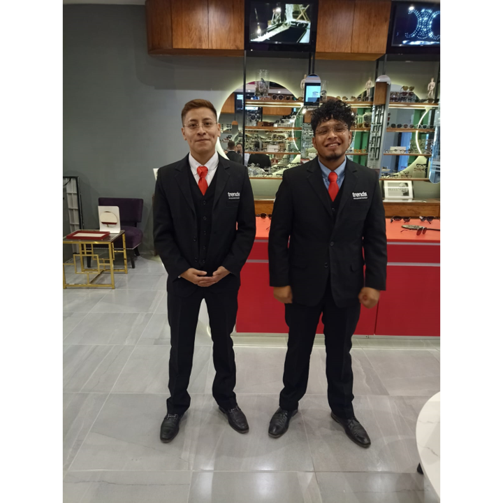
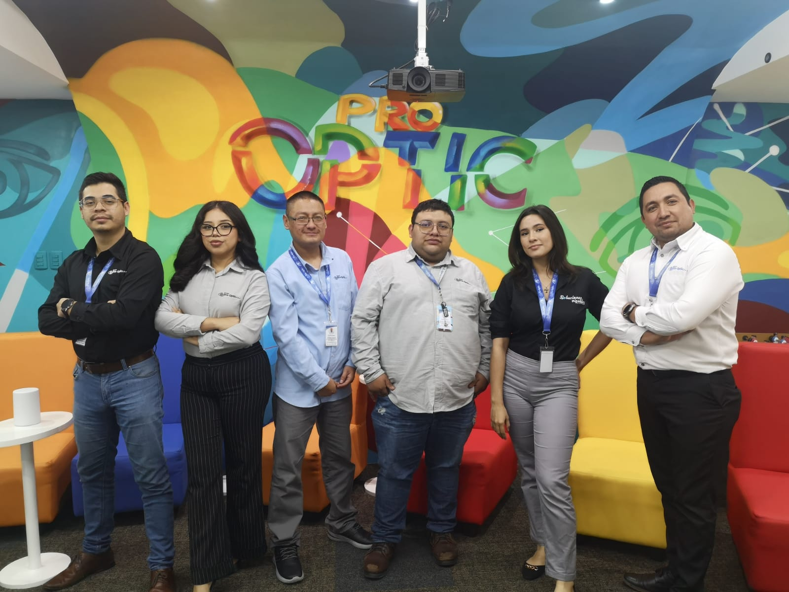
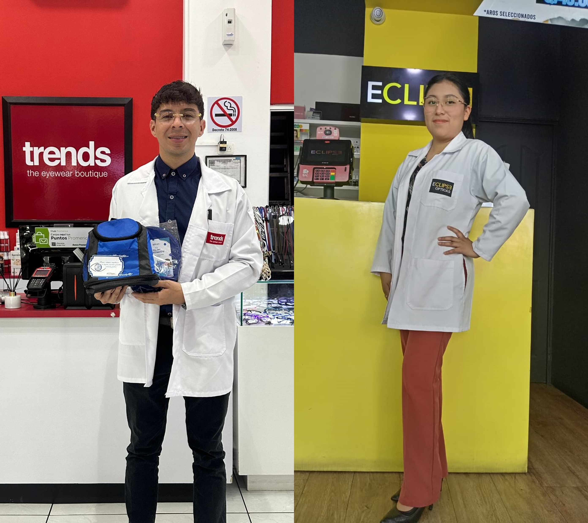

25 de Septiembre de 2023
Implementacion de Uniformes
Estamos iniciando con la implementación de uniformes en todos los conceptos:
El día 25 de septiembre del 2023, los chicos de Trends Oakland estrenaron sus uniformes en la reapertura de la tienda, ¡Se ven súper elegantes!, estén atentos que próximamente se estarán implementando en los demás puntos de venta.
Así también, a partir del 25 de septiembre del 2023, se implementó en oficinas centrales el uso de camisas y blusas para el personal administrativo, generando así un mayor sentido de pertenencia de los colaboradores hacia la familia Pro-Optic. ¡Nos encanta verlos debidamente identificados con su uniforme y gafete!
“Hago que tu mundo se vea mejor”, es el lema en las batas de nuestros Optómetras de Eclipse y Trends. ¡Se ven súper profesionales queridos Doctores, transmitiendo confianza, rigor y seguridad a todos sus pacientes!
